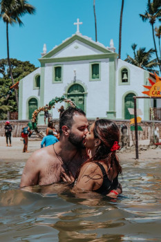

Nossa real história
Comienzo
Tudo começou quando eu tava no meu quartinho tranquilo, relaxado e com um coração oco,
Ai eu pensei, vou entrar em um APP DE RELACIONAMENTO e encontra meu recheio da panqueca
Nisso, de longe avisto uma menina toda sorridente e penso: 'Uau, que linda!'
Pois bem, nos combinamos e ela demorou três dias e três noites para falar commigo,
já ate não lembrava da existência dela.
Decisão
Depois de muito me enrolar, ela me contou onde se localizava e eu fiquei:'MEU DEUS, POR QUE TO FALANDO COM ELA?'
Mas ela virou e disse o seguinte: 'Se tu me vim me conhecer, eu te mostro um lugar que camarão é 15 reais'
Cara, como perde isso, né? Então ficou decidido, vou em busca desse amor!
New world
Oh No! Meu avião começou a tremer e tive que pular de paraquedas minutos
antes de chegar no objetivo final, nadei incansavelmente até encontrar terra.
Cheguei nesse novo mundo! Não entendi nada quando vi o mar!
CARA, A ÁGUA DO MAR É AZUL !!
Mas e agora? Onde vou, o que eu faço? decidi então fingir ser algum
dos animais locais para conseguir informações.
Trajeto
Consegui informações váliosas com meus amigos que fiz, eles me disseram o seguinte:
'Siga reto, lá você vai encontrar duas pernas como você, eles saberão te informar melhor!'
Segui minha jornada pela praia, subi em coqueiros para me hidratar com os cocos,
Corria atras de peixinhos com uma peneira feita de folha de coqueiros.
Enfim, cheguei em uma pequena igreja onde me guiaram até uma grande cidade,
com mais trânsito que São Paulo.
Encuentro
Cheguei em Recife e agora? Onde vou encontrar meu amor?
Segui andando para o centro, casas e prédio antigos foram aparecendo,
conheci uma rua chamada Rua do Bom Jesus, fiquei impressionado pela rua de pedras, prédio conservados e belas árvores.
Então avistei mais adiante uma moça dançando frevo, com um guarda-chuva micro
Estranhei, mas me aproximei e comecei a reconhecer a bela donzela
Ai meu deus! Eu achei então o MEU AMORZINHO, era ela!
Dois Trouxãao

Finalmente, cheguei no final de uma jornada cheia de aventuras. Mas de inicio a outra jornada,
Contei tudo que houve, ela ficou abismada, um drama de filme de ação tremendo!
Juntos voltamos a todos os locais que passeamos e ainda desbravamos outras cidades.
Conhecemos águas quentes, desbravamos morros de pedras, escalamos a misericordia, comemos comidas novas
Agora é isso! Encontrei o meu amor, tampa da minha coca
o mel do meu queijo, manteiga do meu pão, recheio da minha panqueca, prego do meu chinelo

{kind=link}